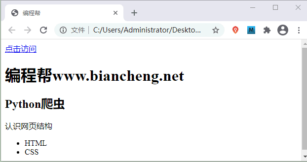
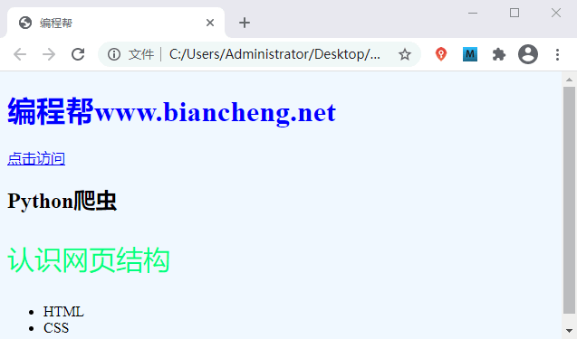
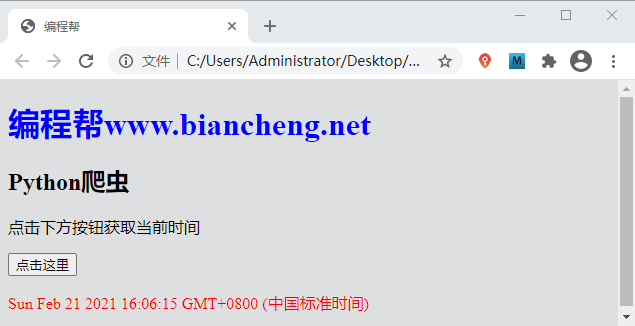

网页是怎样构成的
爬虫程序之所以可以抓取数据，是因为爬虫能够对网页进行分析，并在网页中提取出想要的数据。在学习 Python 爬虫模块前，我们有必要先熟悉网页的基本结构，这是编写爬虫程序的必备知识。
如图 2 所示内嵌样式通过 style 标签书写样式表：
简单示例：
如果用人体来比喻网站结构的话，那么 HTML 是人体的骨架，它定义了人的嘴巴、眼睛、耳朵长在什么位置；CSS 描述了人体的外观细节，比如嘴巴长什么样子，眼睛是双眼皮还是单眼，皮肤是黑色的还是白色的等；而 JavaScript 则表示人拥有的技能，例如唱歌、打球、游泳等。
如果您熟悉前端语言，那么您可以轻松地掌握本节知识。
网页一般由三部分组成，分别是 HTML（超文本标记语言）、CSS（层叠样式表）和 JavaScript（简称“JS”动态脚本语言），它们三者在网页中分别承担着不同的任务。- HTML 负责定义网页的内容
- CSS 负责描述网页的布局
- JavaScript 负责网页的行为
HTML
HTML 是网页的基本结构，它相当于人体的骨骼结构。网页中同时带有“＜”、“＞”符号的都属于 HTML 标签。常见的 HTML 标签如下所示：<!DOCTYPE html> 声明为 HTML5 文档 <html>..</html> 是网页的根元素 <head>..</head> 元素包含了文档的元（meta）数据，如 <meta charset="utf-8"> 定义网页编码格式为 utf-8。 <title>..<title> 元素描述了文档的标题 <body>..</body> 表示用户可见的内容 <div>..</div> 表示框架 <p>..</p> 表示段落 <ul>..</ul> 定义无序列表 <ol>..</ol>定义有序列表 <li>..</li>表示列表项 <img src="" alt="">表示图片 <h1>..</h1>表示标题 <a href="">..</a>表示超链接编写如下代码：
<!DOCTYPE html> <html> <head> <meta charset="utf-8"> <title>编程帮</title> </head> <body> <a href="www.biancheng.net">点击访问</a> <h1>编程帮www.biancheng.net</h1> <h2>Python爬虫</h2> <div> <p>认识网页结构</p> <ul> <li>HTML</li> <li>CSS</li> </ul> </div> </body> </html>运行结果如下图所示：

图1：HTML网页结构
图1：HTML网页结构
CSS
CSS 表示层叠样式表，其编写方法有三种，分别是行内样式、内嵌样式和外联样式。CSS 代码演示如下：
<!DOCTYPE html>
<html>
<head>
<!-- 内嵌样式 -->
<style type="text/css">
body{
background-color:yellow;
}
p{
font-size: 30px;
color: springgreen;
}
</style>
<meta charset="utf-8">
<title>编程帮</title>
</head>
<body>
<!-- h1标签使用了行内样式 -->
<h1 style="color: blue;">编程帮www.biancheng.net</h1>
<a href="www.biancheng.net">点击访问</a>
<h2>Python爬虫</h2>
<div>
<p>认识网页结构</p>
<ul>
<li>HTML</li>
<li>CSS</li>
</ul>
</div>
</body>
</html>
运行结果如下图所示：

图2：CSS样式表演示
图2：CSS样式表演示
如图 2 所示内嵌样式通过 style 标签书写样式表：
＜style type="text/css"＞</style>
而行内样式则通过 HTML 元素的 style 属性来书写 CSS 代码。注意，每一个 HTML 元素，都有 style，class，id，name，title 属性。
外联样式表指的是将 CSS 代码单独保存为以 .css 结尾的文件，并使用 <link> 引入到所需页面：
<head> <link rel="stylesheet" type="text/css" href="mystyle.css"> </head>当样式需要被应用到多个页面的时候，使用外联样式表是最佳的选择。
JavaScript
JavaScript 负责描述网页的行为，比如，交互的内容和各种特效都可以使用 JavaScript 来实现。当然可以通过其他方式实现，比如 jQuery、还有一些前端框架( vue、React 等)，不过它们都是在“JS”的基础上实现的。简单示例：
<!DOCTYPE html>
<html>
<head>
<style type="text/css">
body{
background-color: rgb(220, 226, 226);
}
</style>
<meta charset="utf-8">
<title>编程帮</title>
</head>
<body>
<h1 style="color: blue;">编程帮www.biancheng.net</h1>
<h2>Python爬虫</h2>
<p>点击下方按钮获取当前时间</p>
<button onclick="DisplayDate()">点击这里</button>
<p id="time" style="color: red;"></p>
<!-- script标签内部编写js代码 -->
<script>
function DisplayDate(){
document.getElementById("time").innerHTML=Date()
}
</script>
</div>
</body>
</html>
运行结果如下：

图3：JS获取当前时间
图3：JS获取当前时间
如果用人体来比喻网站结构的话，那么 HTML 是人体的骨架，它定义了人的嘴巴、眼睛、耳朵长在什么位置；CSS 描述了人体的外观细节，比如嘴巴长什么样子，眼睛是双眼皮还是单眼，皮肤是黑色的还是白色的等；而 JavaScript 则表示人拥有的技能，例如唱歌、打球、游泳等。
关注公众号「站长严长生」，在手机上阅读所有教程，随时随地都能学习。内含一款搜索神器，免费下载全网书籍和视频。

微信扫码关注公众号